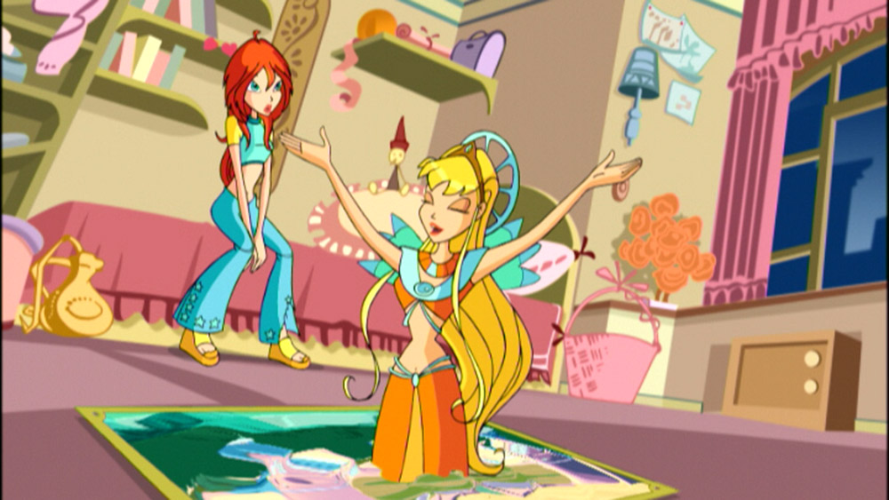

Welcome to the World of Winx Club!
Discover the Magic of Friendship, Adventure, and Self-Discovery in the First Season!
Welcome to the enchanting and magical realm of Winx Club! In the first season of this iconic animated series, viewers are transported to a captivating world where fairies, magic, and mystical creatures exist beyond our wildest dreams. The season introduces us to Bloom, a young girl who discovers her inner fairy powers, and embarks on an incredible journey of self-discovery, friendship, and adventure.
As she forms lasting bonds with her new friends—Stella, Flora, Musa, and Tecna—Bloom learns to harness her growing magical abilities while facing challenges that test her strength, courage, and heart. Filled with thrilling adventures, empowering moments, and beautiful magical transformations, season one sets the stage for an unforgettable journey of growth and discovery.
With vibrant animation, enchanting music, and powerful storytelling, the show draws viewers into a fantastical world where the power of friendship, bravery, and self-belief reign supreme. Get ready for a whirlwind of magic, mystery, and heartwarming moments as the Winx Club takes flight!
The Story of Season One
The adventure begins when Bloom, an ordinary girl from Earth, discovers she has magical powers while saving Stella, a fairy princess, from trouble. This event sparks a chain of events that brings Bloom to Alfea, a magical school for fairies. At Alfea, Bloom meets four other girls—Stella, Musa, Tecna, and Flora—each with their own unique magical abilities. Together, they form the Winx Club.
As Bloom and her friends embark on their journey to unlock the mysteries of Bloom's origins and fully control her powers, they must also face dark forces and enemies. The Trix, a trio of witches from Cloud Tower, are constantly scheming to steal the powerful Dragon Flame that resides within Bloom, and their pursuit becomes the central conflict of the season.

The Magic of Friendship
At its core, Winx Club is a show about the power of friendship and self-discovery. As Bloom and her friends navigate the challenges of being young fairies at Alfea, they learn to trust each other, overcome obstacles, and fight for what they believe in. The girls’ diverse personalities make them a great team, and their strong bond is what allows them to face the dark forces threatening their world.
From the excitement of magical battles to moments of personal growth, the season highlights the importance of believing in oneself, embracing differences, and working together to achieve a common goal.
Villains & Challenges
The first season of Winx Club is packed with intense action and thrilling moments, largely due to the presence of its formidable villains. At the forefront of these antagonists are the Trix, a trio of wicked witches from the notorious Cloud Tower.
The Trix—composed of the cunning Icy, the fiery Stormy, and the manipulative Darcy—are relentless in their quest to steal the powerful Dragon Flame, a rare and ancient magical force that resides within Bloom. Their ultimate goal is to harness its immense power for their own selfish purposes, making them a constant and dangerous threat to Bloom and her friends.
With their formidable magical abilities, sharp intelligence, and devious personalities, the Trix will stop at nothing to undermine the Winx Club and destroy any obstacles in their way. Throughout the season, their evil schemes create numerous challenges for the fairies, from attempting to sabotage their education at Alfea to launching full-scale attacks in their pursuit of the Dragon Flame.
Despite the Trix's constant interference, the Winx Club remains undeterred. With courage, teamwork, and the belief in the power of friendship, Bloom and her friends are always ready to face off against these dark forces. As the battle between good and evil intensifies, the Winx Club must confront the Trix head-on, proving that determination and heart can overcome even the most treacherous of enemies.

Why Watch Season One?
If you love magical worlds filled with adventure, vibrant characters, and unforgettable music, then Winx Club is the show for you! The first season will captivate you with its heartfelt storytelling, exciting action, and stunning animation. Whether you're discovering the world of Winx Club for the first time or revisiting the magic, there's no better time to dive in!
Join the Winx Club Today!
Ready to experience the magic? Watch the first season of Winx Club and immerse yourself in a world of fantasy, friendship, and adventure.